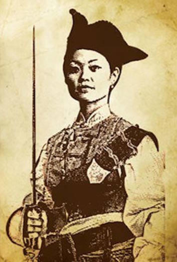

History of Seafaring Women
Ever since the first pirate ships of the Mediterranean and North Sea, mostly men were interested in the rough sea life and hard work that piracy entailed. Centuries of continuing superstitions created an environment where women were unwanted. It was believed that having a woman on the ship, while at sea, would create bad luck to those on the crew and lower the work ethic. It was also said that such behavior would anger the uncontrolled seas that could "take revenge" on the ship. Oddly enough, naked women were completely allowed on board! The reasoning behind this being that naked women "calmed the sea". Due to this, ships would typically have a topless woman figurine perched on the bow, or front, of the ship. It was believed that her bare torso would shame the rough seas into becoming calmer and that her open eyes would guide the pirates to safety.
However, recent studies show that women were more than figureheads carved into ships and that such superstitions did not stop women from accompanying men on the ship. Some would travel as the wives or mistresses of ship captains. Brave women disguised themselves as men and integrated into the
crew of pirate ships, serving undetected. Powerful women fought fiercely with men, some even secured their position as ship captains and leaders of
pirate men. The sea was a place unbound by any country, creating an appealing opportunity for many. It's a complete free-for-all, anyone can fly a
flag from another country and pretend to be someone that they are not. Author of Pirate Women: The Princesses, Prostitutes, and Privateers Who Ruled the Seven Seas, Laura Sook Duncombe calls this "a multinational masquerade ball." Of course, women are going to find this alluring. They were allowed to get rid of their repressed lives and make themselves into a whole new person.
We may never know just how many women went to sea disguised as men, since the only cases we have are those in which the woman's true sex is revealed and publicized. There must be many more women who sailed with men, as men, whose sex was never revealed and who died anonymously. However, the true question should be, how did young women disguise themselves as men?
Most working women in the 17th and 18th centuries were accustomed to a hard life. Working long hours and using a great deal of physical strength, a female sailor could be strong enough that she would not find the demands of a sailor's work too much for her. The main reason why women were successful disguised as men was that they appeared to be adolescent boys. The clothes worn by the crew were ideal to hide a woman's body shape. Most of the men aboard the ships would have shoulder length hair, the women would only need to tie their hair back. Then, all that was needed was to bind their chests tight enough for them to be hidden underneath their shirts.
Perhaps the trickiest aspects of women facing life as sailors were due to bodily functions. Sailors would generally climb over the downwind side of the ship, or forward toward the head of the ship and urinate into the sea. It is assumed that women would have gone to the head of the ship, rather than attempt to urinate over the side. However, recent evidence, shows that a few women who cross-dressed used a small funnel to assist them. A topic that is not mentioned in any cases of female pirates is the subject of menstruation. One theory suggests that since the women on the ships lived such hard and active lifestyles, then they may have stopped menstruating, similar to female athletes nowadays. A contrasting theory is that so many pirates suffered from various diseases, that they were not likely to comment on another crew-mate having a bloodstain on their clothing.
This may then cause you to then ask what would cause young women to go to sea dressed as a man? The answer varies from case to case. The traditional reason, and the one that many tend to romanticize, was that women went to sea to join their lovers. Perhaps a few women did so; however, evidence suggests that most women who disguised themselves as men did so due for economic reasons or because they wished to escape from their past or from problems at home.